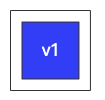
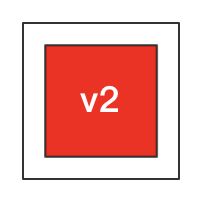
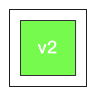
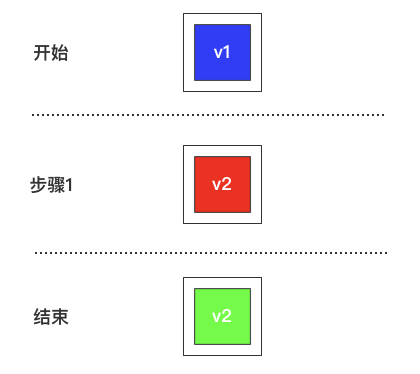
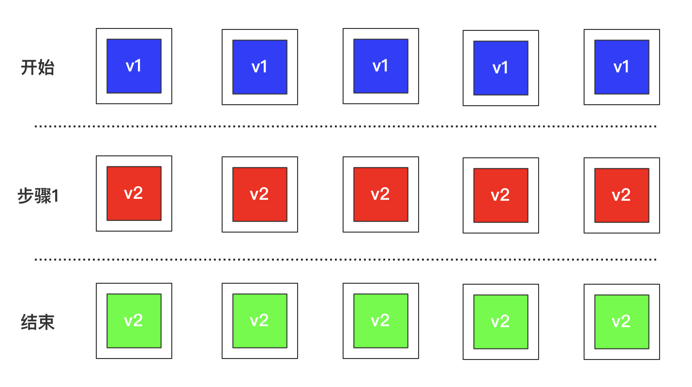
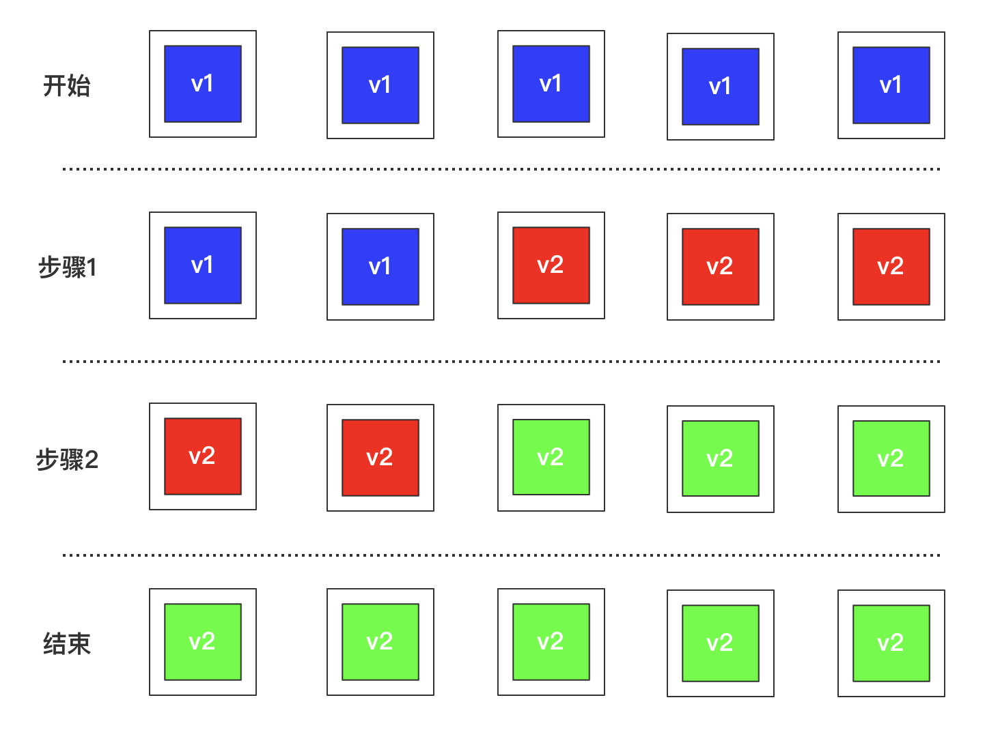
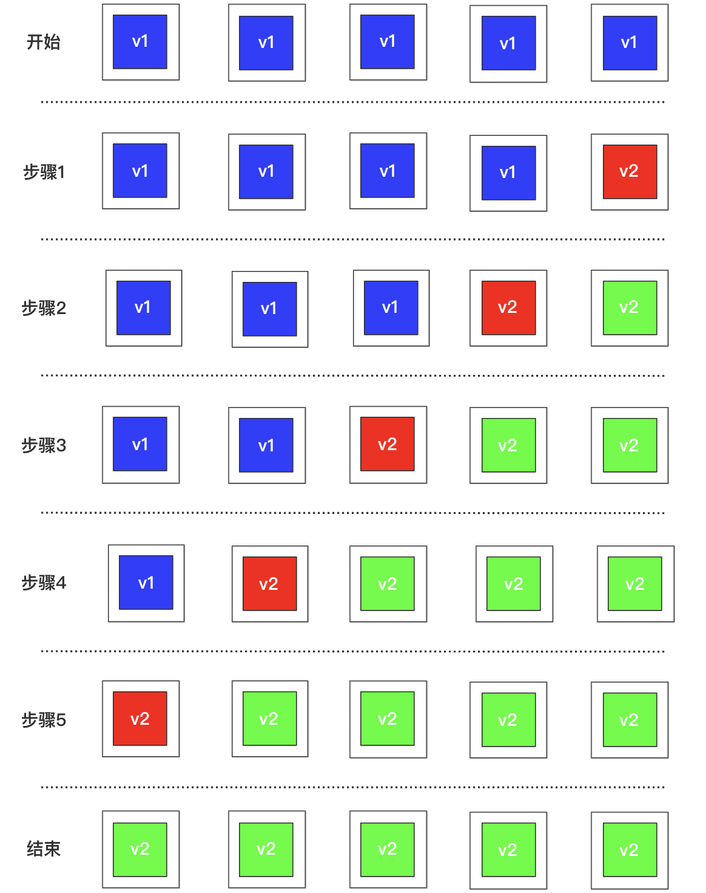
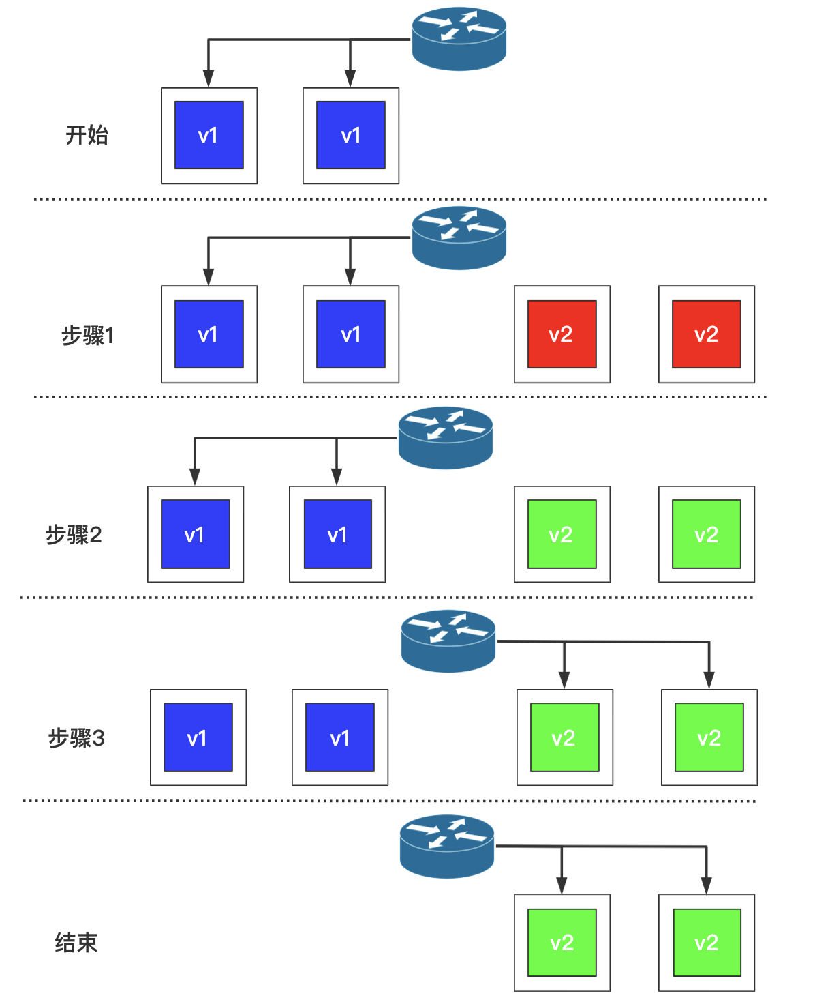
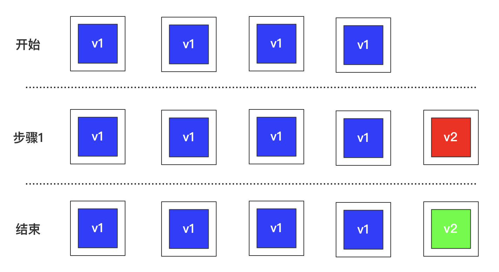
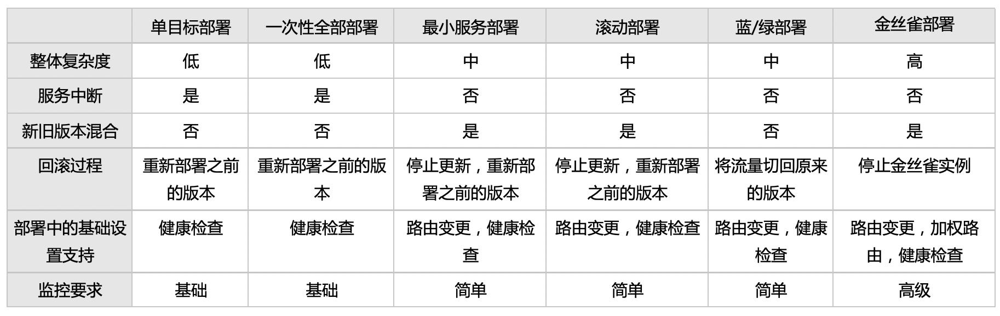

在持续交付和大规模互联网应用流行前，企业一般采用手动的方式进行部署，通常选择活动用户最少的时间（如周末或者凌晨），并且告诉大家需要一段时间来维护系统。在这段时间内，运维团队会停止旧的版本，部署新的版本并检查一切是否恢复正常。
但是现在，由于微服务的出现，我们会不断地将各服务的新版本部署到生产环境中，不能简单的认为部署就意味着停机，因为这样系统会一直有不同部分处于停机状态，我们需要考虑新的部署策略。
本文将介绍 6 种常见的部署策略：单目标部署、一次性全部部署、最小服务部署、滚动部署、蓝/绿部署、金丝雀部署，每种策略背后的理念都如其名。
术语
为了更好地介绍和对比这些策略，我们先来说明一组术语：
期望的实例数量
这是当服务功能完全正常时，预计将运行的服务副本数量。
期望的实例数量简写为：desired
如：desired=3，表示在任何一次部署中，需要将 3 个旧版本的服务实例更新为 3 个新版本的服务实例。
最小的健康实例数量
当删除旧实例、启动新实例的过程中，我们希望至少有一些实例是处于健康状态（无论是旧实例还是新实例），这样可以保证系统能够最低限度地提供服务。
最小的健康实例数量简写为：minimum
最大的实例数量
有时我们希望在删除旧实例前，先启动一些新版本的服务实例，以便减少服务部署过程中的停机时间，这意味着我们需要更多的资源。通过限制最大实例数量，我们同时也限制了部署过程中最大资源使用量。
最大的实例数量简写为：maximum
图表元素说明
对于每个策略，我们通过一张图来表示部署过程中的事件连续性。



单目标部署
这是最简单的策略，也是需要资源最少的策略。在这种策略下，我们可以假设服务只有一个正在运行的实例，无论何时都必须先停止它，然后再部署新的实例。这意味着服务会存在中断，但是不需要额外的资源。
单目标部署策略配置参数为：
- desired: 1
- minimum: 0%
- maximum: 0%
下图展示了单目标部署策略的实施步骤：

- 开始：存在一个旧版本的实例。
- 步骤1：该实例被新版本实例替换，在新实例完全启动前，服务实际上不可用。
- 结束：新实例启动完成，可以开始接收外部请求。
一次性全部部署
改策略类似于单目标部署策略，唯一的区别是我们可以拥有任意固定数量的实例，而不是只有一个实例。和单目标部署的情况一样，一次性全部部署策略升级期间不需要额外的资源，但是也存在服务中断。
一次性全部部署策略配置参数为：
- desired: 5
- minimum: 0%
- maximum: 0%

- 开始：存在 5 个旧版本的实例。
- 步骤1：同时停止所有 5 个实例，替换为 5 个新版本的实例，在新版本启动之前，该服务实际上不可用。
- 结束：5个新实例启动完成，可以开始接收外部请求。
最小服务部署
前边两个策略的问题在于，它们都会中断服务。我们可以调整策略来改善这一点。
最小服务部署表示确保始终存在着一部分健康的服务实例，我们可以先将一部分实例进行更新，等它们完成启动后再去更新另一部分旧实例。可以不断重复这个过程，直到所有的旧实例都被新的实例所替换。
这种方式可以在不需要额外资源的情况下避免服务中断，但风险是这些存活的实例需要能够承受住额外的流量。
最小服务部署策略配置参数为：
- desired: 5
- minimum: 40%（也可以用绝对值：2）
- maximum: 0%

- 开始：存在 5 个旧版本的实例。
- 步骤1：由于我们要求 minimum 最小值为 40%，也就是至少要保留 2 个实例一直提供服务，所以只能先停止 3 个实例并将它们升级成新版本。
- 步骤2：新实例完全启动后，可以停止之前的 2 个旧实例，并将它们升级为新的版本。
- 结束：所有新实例都处于正常运行状态。
滚动部署
我们可以将滚动部署看作最小服务部署的另一种形式，不过它的重点不在于健康实例的最小数量，而在于停止实例的最大数量。
滚动部署最典型的情况是将停止实例的最大数量设置为 1，也就是任意时刻只有 1 个实例处于更新过程中。
与最小服务部署相比，滚动部署的最主要有点在于，通过限制同时停止实例的数量，我们可以控制需要保留多少实例来承接额外的负载，它的缺点是部署需要更长的时间。
最小服务部署策略配置参数为：
- desired: 5
- minimum: 80%（也可以用绝对值：4）
- maximum: 0%

- 开始：存在 5 个旧版本实例。
- 步骤1：停止其中一个实例并将它替换为新的实例。
- 步骤2：当步骤1中启动的实例完成启动后，停止另一个旧实例，将其也替换为新的实例。
- 步骤3、4、5：对其余实例重复相同的过程。
- 结束：所有的新实例现在都可以正常运行。
注：因为滚动部署相当于最小服务部署的另一种形式，所以 minimum = desired - 1
蓝/绿部署
蓝/绿部署是微服务领域种最受欢迎的一种部署策略，之前介绍过的最小服务和滚动部署存在两个缺点：1）升级期间承担总负载的健康实例数量会减少。2）部署期间，生产环境种会混合新旧两个版本的应用程序。
蓝/绿部署无法简单地通过组合 desired、minimum、maximum 这几个参数来完成，它要求只有当所有的新实例都准备好的时候，用户才能访问新版本的服务，同时所有的旧实例立即变为不可用。为了实现这一目标，我们需要控制请求路由和服务编排。

- 开始：存在多个旧版本的实例，请求通过负载均衡器/路由器被发送到旧版本的服务。
- 步骤1：创建多个新实例，这些实例不可访问，负载均衡器/路由器仍将所有请求发送到旧的实例。
- 步骤2：新实例启动完成可以处理请求了，但是尚未向他们发送任何请求。
- 步骤3：重新配置负载均衡器/路由器，将所有接收的请求转发到新版本的服务。这个过程几乎是瞬间完成的，此时出了正在处理的请求外，没有新请求再被发送到旧版本的服务。
- 结束：旧实例将已有请求处理完不再有用后，将他们停止。
蓝/绿部署提供了最佳的用户体验，但是代价是增加了复杂性，以及占用了更多资源。
金丝雀部署
金丝雀部署是另一种无法通过组合 desired、minimum、maximum 参数实现的策略。这种策略允许我们尝试新版本的服务，但不完全承诺切换到新版本。这样我们只需在原来的旧版本的实例中添加一个新版本的实例，而不必停止其中的旧版本。负载均衡器会将一部分请求转发到金丝雀实例上，我们可以通过检查日志、指标来了解新实例的运行情况。
金丝雀部署可以分为两个步骤执行：

- 开始：存在多个旧版本的实例。
- 步骤1：创建一个新版本的实例，不删除任何旧版本的实例。
- 结束：新的实例启动完成并正常运行，可以与旧的实例一起提供服务。
金丝雀实例有时需要较长的时间，才能充分观察到它在新环境下的运行状况，在这个过程中，我们可能会部署其他的新版本，这时需要确保只重新部署金丝雀意外的实例。
真正用到金丝雀的实例情况非常少，如果我们只想向一部分用户开放新功能，可以使用功能开关来实现。金丝雀部署的另一个好处是可以测试一些底层的配置变化，例如日志、指标框架、垃圾回收或者新版 jvm 等。
不同策略的特点及代价总结
